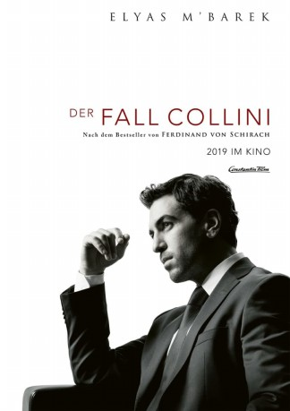

#11888 Der Fall Collini
 
 IMDB-Wertung: 7.3 / 10
IMDB-Wertung: 7.3 / 10  Metascore: 0
Metascore: 0 
Der 85 Jahre alte, angesehene Industrielle Hans Meyer wird ermordet – scheinbar ohne jedes Motiv. Kurz darauf stellt sich der pensionierte Gastarbeiter Fabrizio Collini als Täter der Polizei. Der junge und unerfahrene Rechtsanwalt Caspar Leinen wird als sein Pflichtverteidiger bestellt. Er überlegt erst, abzulehnen, denn er kannte den Toten. Dessen Enkelin Johanna war seine Jugendliebe. Doch obwohl alles gegen Leinen als Verteidiger spricht und er es mit dem legendären Strafverteidiger Professor Richard Mattinger aufnehmen muss, nimmt er den Fall an. Als es zu einer mehrtägigen Unterbrechung kommt, macht Leinen aber plötzlich durch Zufall eine Entdeckung und stößt damit auf einen der größten Justizskandale der deutschen Geschichte...
Jahr: 2019
Dauer: 122 Minuten
FSK: 12
Land: Deutschland Studio: Constantin FilmTonspuren:
Untertitel: Deutsch,
Auflösung: 1080p (1920x804) Größe: 5335 MB
Genre: Thriller, Drama, Krimi
Regisseur: Marco Kreuzpaintner
Drehbuch: Robert Gold, Jens-Frederik Otto, Christian Zübert, Ferdinand von Schirach
Soundtrack: Ben Lukas Boysen
Darsteller:
 Franco Nero als Fabrizio Collini
Franco Nero als Fabrizio Collini Alexandra Maria Lara als Johanna
Alexandra Maria Lara als Johanna Jannis Niewöhner als Young Hans Meyer
Jannis Niewöhner als Young Hans Meyer Elyas M'Barek als Caspar Leinen
Elyas M'Barek als Caspar Leinen- Pia Stutzenstein als Nina
 Hannes Wegener als Aicke
Hannes Wegener als Aicke Heiner Lauterbach als Richard Mattinger
Heiner Lauterbach als Richard Mattinger Stefano Cassetti als Nicola Collini
Stefano Cassetti als Nicola Collini- Manfred Zapatka als Hans Meyer
- Axel Moustache als Alberto Lucchesi
- Anna Ladner als Courthouse Employee
- Frederik Götz als Tim
- Alessandro Baccini als Nazi Officer SS
- Max Wagner als SS Officer
- Irene Baruffetti als Collini's Mother
- Levi Kirchhoff als
- Alexander Tschernek als Pizza Seller
- Alessio Nicolai als Hostage
Datei: X:\2019(A-F)\Fall Collini, Der (2019, FSK12, 1920x804).mkv seit 02.10.2019
Festplatte: HD 2018(G-Z)-2019(A-Z)
 Es gibt insgesamt 60 Filme in der Gruppe '2019(A-F)'
Es gibt insgesamt 60 Filme in der Gruppe '2019(A-F)'